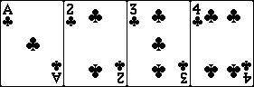

Ce jeu est une variante du Rami Kaluki.
Rami est un jeu de cartes consistant à déposer sa main en ordonnant les cartes en suite de 3 cartes ou plus, en brelan ou en carré.
Le joueur gagnant est celui dont la pénalité est la plus faible à la fin de la partie.
On distribue 13 cartes à chaque joueur.
Le reste des cartes est placé face contre la table et forme la pioche.
A côte est placée la défausse.
Le joueur est le joueur appelé SUD. Les joueurs gérés par l'ordinateur sont appelés EST, NORD et OUEST.
Ce jeu peut se jouer à :
Clic Gauche sur Dos Carte : Piocher.
Clic Gauche sur Carte Défaussée : Tirer carte.
Clic Droit sur Carte Défaussée : Permet de voir les cartes déjà jetées.
Ctrl + Clic Gauche : Permet de pré-sélectionner les cartes qui seront poséees.
Clic Gauche sur 1 carte dans la main : Permet de sélectionner la carte afin de la déplacer, de la poser ou de la jeter.
Clic Gauche sur 1 des cartes pré-sélectionnées et Glisser avec Clic Maintenu : Permet de déplacer l'ensemble de cartes ( 3 minimum ) afin de les poser.
Clic Droit sur les cartes de la main : Permet de trier les cartes par couleurs et par valeurs.
En cas d'erreur, la main du joueur retrouve son état initial.
Désactivation des animations pour les joueurs gérés par l'ordinateur.
Désactivation des bruitages pour les joueurs gérés par l'ordinateur.
Réglage du volume des bruitages.
Réglage de la vitesse à laquelle le jeu se déroule.
Réglage du niveau des joueurs gérés par l'ordinateur.
Par exemple :

ou
mais pas
Par exemple :
ou
Par exemple :
Les cartes de 2 à 10 ont leurs valeurs propres ( 2 à 10 ).
Les figures V, D, R valent 10.
L'AS possède une valeur de 1 lorsqu'il est compris dans une suite 1, 2, 3, ... et 10 dans les autres cas.
La pénalité à appliquer à un joueur est calculée ainsi :
Le joueur gagnant n'a pas de pénalité.
Si le joueur a conservé ses 13 cartes, donc sans avoir pu posé : 100 de pénalité.
Sinon la pénalité vaut la somme de la valeur des cartes restant en sa possession; la pénalité de l'AS est de 10, quelque soit sa position.
Pour tout problèmes, me contacter à : My Name @ Fournisseur . Pays